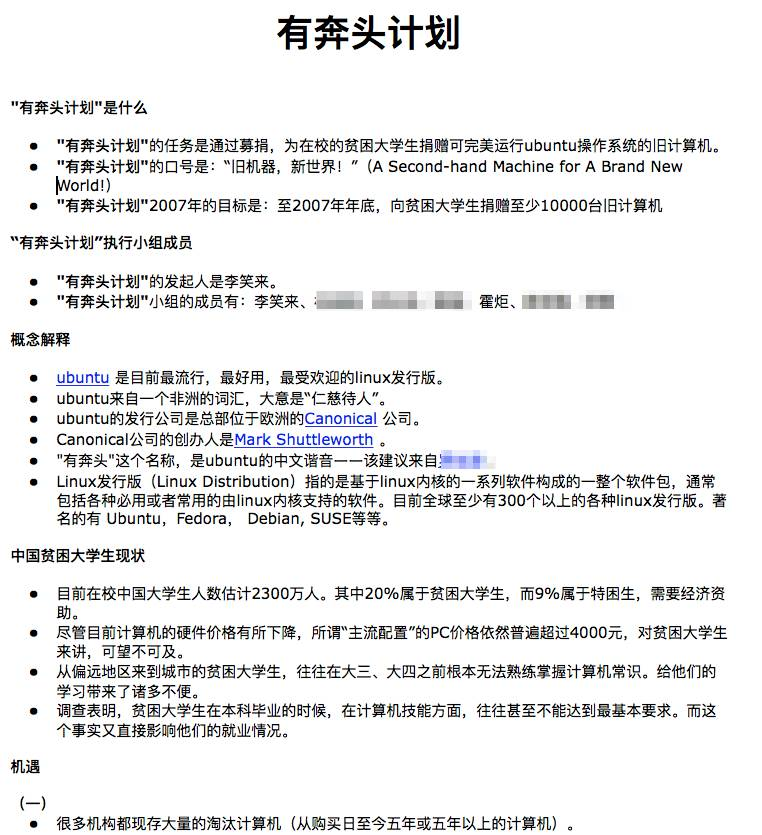
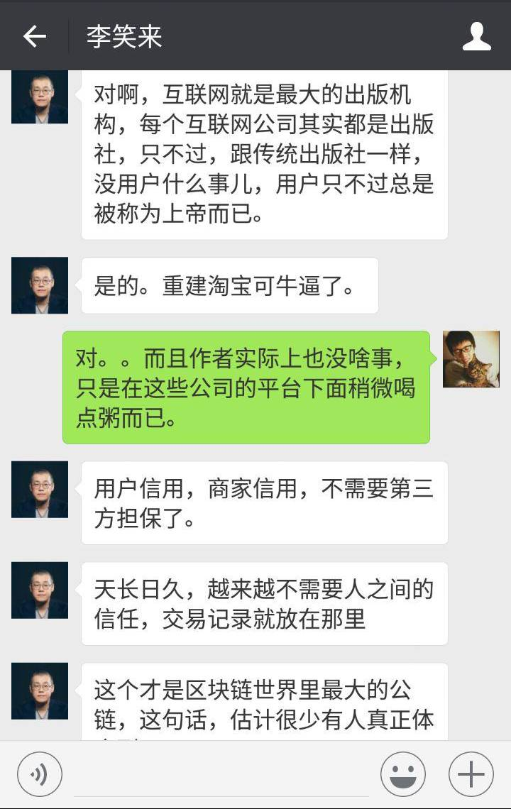
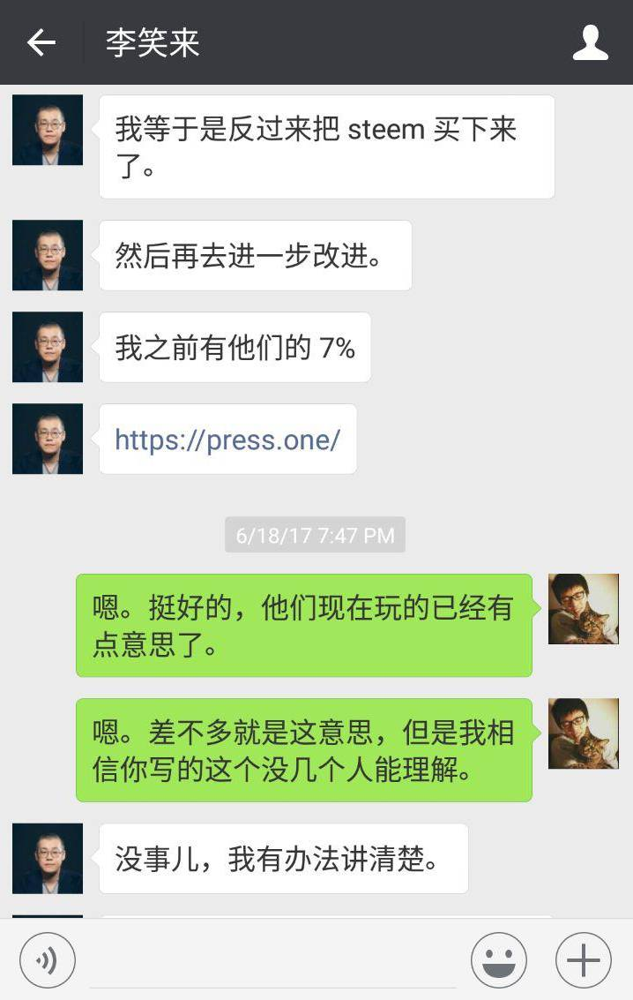

李笑来，那个一顿饭点8条鲈鱼的人
Contents
我已经记不清到底哪年认识的李笑来，大概是2006年吧。到现在已经超过10年了。这10年间我看着他做过无数事情，聊过很多想法。今天笑来变成了众矢之的，似乎所有事情都怪他，很多文章干脆把他描述成一个处心积虑的骗子的文章。但李笑来究竟如何想，他的逻辑是什么，没有一篇文章写过。当然，他们没采访过李笑来，没读过他的文章，怎么能解释这些问题呢？我想，与其让别人来批判他，不如由我这个熟悉他的人来吧。
李笑来有太多想法和行为是不合常理的，我非常理解他会被人们误会。从我认识他的第一天，就明白了他肯定是个有争议的人物。我们第一次见面是在一家川菜馆吃饭，那顿饭至今难忘，因为桌上有个人点菜的方式太奇怪了。我们一共4个人，这家伙点了8份豆干，4盘回锅肉，正常人哪有这么点菜的？他的逻辑倒是很简单，既然这个好吃，为什么不多点几份？全然不顾普通人点菜的习惯是不会点重复的菜。这个人就是李笑来。我想了想他的逻辑，觉得确实是合理的。但是大多数人未必会接受这种逻辑，更不会仔细考虑是不是他这样做有道理，只会觉得他太不正常了，更别说之后几年他展现了更奇怪的点菜法：请8个人在“美炉村”吃饭，直接点了8条纸包鲈鱼，每人一条，其他什么菜都没点。
一直到今天，李笑来做过的事情我都是大致能理解的。虽然他做的事情有一些我认同，另外一些不认同，但无论是否认同，我都理解他到底为什么这样做。所有的事情都跟他点菜一样，看上去离经叛道甚至荒唐，但如果真的认真仔细推敲，又合乎逻辑，产生这种错位只是因为他对很多事情看法甚至很多东西的基础概念，都是不同于大多数人的。
在那一顿饭之后，我们就成了很好的朋友，经常在一起聊各种想法，也谋划做各种项目。认识之后没多久，笑来专门跑来我家，跟我讨论一个他想做的项目，这个项目并不是什么赚钱的项目，而是写一本计算机普及教材，让人们可以更简单的学习如何使用计算机和网络。他相信每个人都应该认真学习如何使用计算机和上网，最好能学会写程序。今天看来这是理所应当的事，但10年前，很多人家里甚至是没有计算机的。那时候想教会所有人使用计算机，看起来也是一个挺不正常的想法。几个月之后，笑来迷上了Linux，于是他又有了一个新想法，收集那些已经淘汰的计算机，把它们装好Linux配置好，然后把这些机器免费送给买不起或者不愿意买计算机的学生们用。这样可以帮助他们更容易学习计算机和上网，这和前面写教材的思路是一样的，就是，无论如何，应该让每个人学会计算机，这对于这些人至关重要。他当时酷爱Ubuntu，于是给这个项目起了个名字，叫做“有奔头”，意思就是，如果你学习计算机，学会用Linux，不管你现在什么状——失业也好，没上过学也好，贫困生也好——你的将来一定是有奔头的（有奔头是个中国北方常用词，意思是有希望、有前途）。
当年笑来写的第一版计划书，我从邮箱里面找出来截了个图。（其他人名字我打了码，因为没征求他们许可。）

从今天的情况看，他的想法完全正确，如果2006年学会了使用Linux和写程序，在之后的10年里面找到一份高薪工作轻而易举。只不过那个时代相信这件事的人仍然不多。这个项目后来也没成功，有很多现实的因素困扰它，包括如何设立一个非盈利组织等等现实问题，总之，最后我们没能做下去。
2007年左右，我们还发生过一次激烈的争论。笑来坚决认为每个人都应该学会投资股票，甚至，每个家长应该给孩子开一个股票帐号，让孩子从学就学习。我觉得太荒唐了，投资股票是高风险活动，成年人也不一定能适应，更别说是让孩子做，更何况万一赔钱，有很多人是经受不起那种损失的。笑来完全不同意的我看法，他认为越是有可能遭遇损失，越应该尽早开始，因为早的时候人可以调动的资金很少，损失不会太大。家长给孩子开个帐号，放1000块钱，已经足够让孩子去熟悉金融操作了，全损失也不过1000块，但是这个过程学习到的知识，包括因为损失带来的心理建设，都是受益终生的，比到成年之后一次损失50万对人生的影响小的多。那一天我甚至花了几个小时时间试图用数学证明他的想法是错的，但他不为所动。坚决认为人必须从尽量小的时候学会投资，而且必须是自己教会自己这件事。
笑来对“教自己学会某种知识”这个年头有无穷的执念。他非常相信，人可以通过自学掌握各种知识，只要你有正确的方法。他自己确实也是这样做的，他教了自己英语，之后成了新东方被打分最高的英语老师。他教了自己计算机，建站写文章，成了那个时代中文文章流传最广的人之一，他教了自己统计、分析和概率，写下了销量惊人的英语词汇书《TOEFL核心词汇21天突破》，后来，他终于教了自己计算机，还真的做出来了一个分享科技产品的网站KnewOne.com，后来还拿到了创新工厂的投资…当然，他还教了自己如何投资，并且在股票上小赚，最终在比特币上成就了传奇。
到今天为止，他的很多行为仍然是这种理念的贯彻。比如，他写了一本书，叫做《把时间当做朋友》，试图教会人们如何换一个方式看待时间和自己的成长，这本书成了畅销书，这并不意外。但今天很多人并不知道，这本书出版之前，其中所有内容，就都公开放在笑来自己的Blog上，当时笑来的blog是中文互联网上订阅最多的blog之一，目标读者都可以免费阅读这些内容。出版了一段时间之后，他更是把排版好的电子书直接公布在网上。这同样也是普通人不会做的事情，有几个人会把自己正在出售的一本畅销书书直接免费公布了的？但他就是会这样做的人，他希望更多人学会这些方法，这是他认为最重要事情，至于他从里面赚多少钱，那反而不是最重要的。
李笑来有太多的行为不合普通人的逻辑，对于一个完全不理解他的人，用阴谋论解释这一切也不奇怪，毕竟阴谋论总是最流行。比如前几天有一篇文章，试图把李笑来10年来干过的所有事情全连到一起，来证明这些都是事先设计好的阴谋，甚至认为李笑来投资了Linkedin，分答，得到…等等一系列公司，这种说法未免太夸张了，让他这一说，李笑来简直成了巴菲特。当然，笑来同时涉足了大量的领域，同时做很多件事情，这是真的，虽然这看起来也不太合常理，但这确实就是他的生活理念之一：人不能同时只做一件事，那样太浪费了。如果你从他的角度看，把自己的时间看作最宝贵的资源，人生唯一不可再生的资源，花费时间就相当于进行投资，那么同时只做一件事来消耗这种不可再生的宝贵资源，确实太浪费了，所以他永远在同时做很多件事。他一直在试图用自己的行为和其他人证明，同时做很多事是合理，并且可以取得成果的。这个观点有多难以被认同呢？甚至在我家都有分歧，我认为笑来是对的，西乔则不认同，我甚至没法说服她。
这些年来，也许是觉得光写文章已经不够了，他就试图亲自做各种事情，做出榜样，趟出路来，这样就更可以说服别人：“你也可以这样做”。长达10年来，笑来一直着迷于知识的分享，这也是现在看起来古典的互联网精神。他自己一直致力于此，写作，分享，甚至免费分享。在这个基础上，他一直在寻找一种让提供知识的人（可以理解成作者）更方便、更低门槛获得收益的办法。这种驱动力让他去测试了收费群，之后又测试了得到专栏。他测试收费群的行为就是被媒体报道的“情非得已”和那些以人名命名的一系列公司，那时候他几乎劝所有认识的，有写作能力的人开一个这样的公司，然后一起来尝试知识经济的各种可能性。后来罗振宇做了得到，他也立马去尝试，希望通过得到订阅情况测试市场规模，进而让作者们理解“这种方式是可行的，你可以教自己这样做”。如果能理解到他背后的动机，就能理解他的逻辑，这一件件看起来毫无关联的事情，背后也确实没什么关系，它们之中唯一的关联，概括起来简直是一句鸡汤：让更多人可以低成本学会更多的东西。
最近产生了很多争议的Press.One也是如此，我相信很多骂这个项目的人，并没有去试图了解它到底是什么。恰好，知识分享平台也符合我一直以来对互联网的期待，于是几个月之前，我跟笑来聊过不少。如果你读过我上一篇文章的话，应该可以理解现在很多早期互联网用户，都认为目前互联网发展的方向已经出问题了，互联网已经被几家大公司垄断了。笑来也是这么认为的，他希望通过区块链技术来改变它，他想提供一个建立于区块链之上的内容分发渠道。读者可以通过电子合约来和作者签署订阅关系，免费或者支付费用。这个平台有一个最小可用的原型，就是steem.it，这个社区已经运转了一年，它证明了这种想法是可以被实现的。（顺便说一声，steem.it也是笑来投资的，他对自己相信的事情，一直都肯冒比其他人更大的风险）。
考虑到技术细节，现在的以太坊网络承担不了这种应用。如果你看过以太坊的代码和实现就会知道，它虽然是了不起的发明，但是里面有诸多限制没法解决。比如最容易感受到的，每个block有gas限制，这导致了它无法负担大规模应用，数据都存储在链上，如果用来分发内容，会造成链急速膨胀，最终变得不可用，更别说负载图片和音频等等多媒体内容，它的交易速度也不够高…
总之，这些限制导致了以太坊虽然可以做产品原型，但是没法完全独立负担一个复杂的应用。要想做一个内容分发产品，从区块链技术本身到产品实现 ，都有太多的工作要做。这是一个挺大规模的项目，我不确定它最终是否能实现目标，毕竟你没法在事先担保任何产品可以成功，哪怕它再好再伟大再创新，也没法预测。但是我知道它有完善的产品设计和技术逻辑，并不是空气，下面放一些我们6月份聊起这件事时候的截图。


从比特币开始，笑来一直是负担最大风险的人。他在所有人都不看好比特币的时候，用自己的储蓄购买它，他亲自投资了若干项目，希望能让整个生态完整。当然，他早期的冒险，随着比特币价值的上升也得到了回报。笑来总是相信，别人可以和他一样取得这样的成就。
我觉得他未免太理想主义了，我认识了他这么多年，同样是最早关注比特币的人，但到今天，我可以不怕丢人的坦白，我在比特币上没赚到任何钱。我在烤猫上损失掉了几乎全部的比特币，这也是李笑来被人们批判最多的事情之一。但是我并不会因此怪他，投资决定是我自己作出的，我是一个成年人，自己做了决策，自己承担责任，怪不着其他人。何况，烤猫的失败也的确不能怪李笑来，对于他来说那也完全是个意外事件，他自己同样损失很大。但是在现实世界往往不是这样，房价跌了，会有人去砸售楼处。承担自己的责任和损失是困难的，人们总需要找个发泄出口。
每一篇文章都列举李笑来成功项目，但是没有人提及过他的失败。当然，大批失败的项目没人能看到，人们总是拿看得到的那一面来评价。但是我知道，我知道并且参与过他很多个不成功的项目，从写一本书到英语教学网站…且不说这些已经看不到的东西，就说他买比特币的行为，当年在知乎上有一个关于李笑来的帖子，下面无数回复是嘲笑李笑来笃信比特币，甚至有“李笑来这个人最大的缺点就是太相信比特币了”，那时候比特币价格正在低点，笑来被嘲笑的非常凄惨。不过几年之后，比特币涨了，很多回答者悄悄跑去删了自己的回答。
就算是他因为持有大量比特币而出名之后，仍然遭遇过很多失败，我还记得有一次另外一个朋友因为一个项目损失惨重，我去问他状况怎么样，他回答“我也损失很大，不过我承受能力比较强”。其实，这才是他在这些年身体力行尝试各种事情的原因，他认为自己承受力更强（事实上也是的，从心智到资产他都承受力都很强），所以他总是希望亲自尝试，承受这些风险。这当然也不是正常人的逻辑，以正常人的想法，别说他持有那个规模的比特币，哪怕只有他的1%，也可以退休了。按照正常人的逻辑，此时应该到南太平洋买个小岛，像我们所知道的那些富豪一样，快乐的度过奢侈的后半生，尤其是对于他这样的糖尿病人，何必那么辛苦呢？但这恰恰不是他的想法。他不仅自己不会这样做，还多次批评我躲在加拿大悠闲的养猫，不做点正经的事情，是巨大的浪费。几年来他多次劝我回国，到北京再一起做点事情，我曾经动心过，但最终还是放弃了。比起来北京的纷乱，我更喜欢北方雪国的清冷。
如果让我来批判李笑来，我首先要批评的就是他过于理想主义。不是所有人都可以教会自己任何东西的，不是所有人都有他那样的自控能力，不是所有人都愿意和他一样把一个基本的概念想透彻。更不是所有人都可以同时做很多件事且都取得成功。恐怕大部分人，哪怕专心做好一件事都不容易。无论李笑来用什么样的方式试图教人们这样做，我仍然不相信有多少人能做到，这些注定都是少数人的事。这些年来，我看着他为了把这件事说清楚，想尽了办法。比如笑来多次提到一个词叫做 Serendipity ，意思是“意外的好运”，笑来坚信意外的好运可以创造，甚至发明了一套方法论，比如如何保持开放乐观和耐心…但是能把这些都做到的，只能是少数中的少数，更别说做到了还要等待好运到来…
2012年，我眼看着笑来放弃了矿场项目，他想明白了挖矿太困难，决定直接花钱买比特币，当他买的越来越多的时候，我曾经问过他到底是怎么想的，除了我知道的对比特币理念的认同之外，还有什么动力驱动他这样狂买？笑来回答我：“有这样一个经济体的1%，那不是很酷的事吗？”为了追求这个目标，他当时几乎付出了自己全部积蓄。在那个时刻，这当然也是普通人无法理解的行为。他总是这样，身体力行的干着别人没法理解的事情，然后真诚的跟别人讲自己的理由和逻辑，希望别人也能理解甚至学习他。这么多年过去了，他一点也没变。
认识笑来这些年，我真正相信了很多人生活在不同时空里面——这是一个浪漫的说法。更生硬的表达是：这个世界的分裂已经越来越严重了。不同的人群之间无论怎么做也难以互相理解。整个事情最讽刺的地方是，笑来这10年，甚至20年的努力，都是围绕着消除不同人之间在知识上存在的鸿沟，但最终，连他自己也没法被人们广泛理解。要想理解他复杂的理论和经历，学习和提高自己，自己决策参与冒险并且承担可能的损失……这些都太困难了，相比起来，骂他一声骗子确实简单很多。
笑来比我岁数大不少，也经历过更多的事情。除了聊互联网和各种技术，我也经常请教他各种生活问题。很多事情我一筹莫展，他总是呵呵一乐，说这还不简单，我告诉你这样做。基本上他说的都对。有一次我问他，为什么总是知道应该怎么考虑这些问题？他说，嗨，因为我老嘛。

但几乎每一次他提出太前瞻的项目想法，我都会说，“笑来，我觉得你说的这些没几个人能理解。”但是他总是回答我，“没事儿，我能讲清楚。”多少年来，我俩之间发生的每一次争论，都是笑来对，我错。这一次似乎是我对了，人们真的没法理解他，但是我一点也不想要这种“对”。
李笑来，你这个天真的理想主义者。
参考备注：
- 标题图：Image used under Standard license from Shutterstock.com （这张图是我们付费购买的，转载也可直接使用，不用换掉它）
- 我以前写文章提到过的布总，也写了一篇《我有一个朋友，叫李笑来》我放在阅读原文。他回忆了很多往事，除了关于笑来，你还可以看到比特币出现时候，我们是如何讨论它的。
- 互联网完蛋了，已经。 这是我的上一篇文章，这里面也提到了现在互联网的问题，明白了这个前提，就更容易理解为什么笑来相信区块链是在重建互联网。
Author Huo Ju
LastMod 2017-09-09